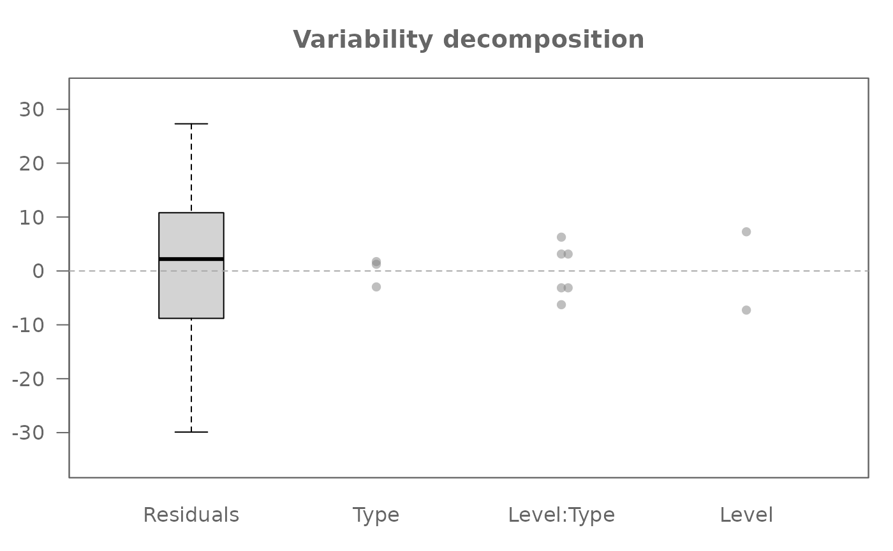
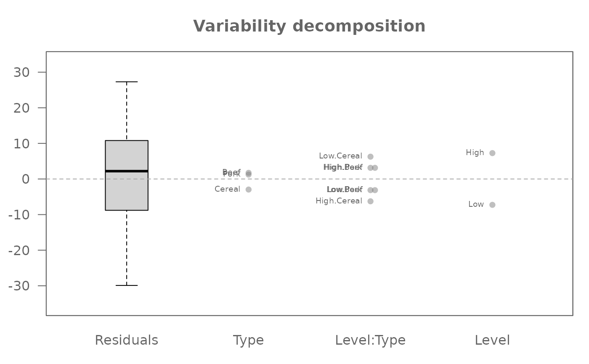
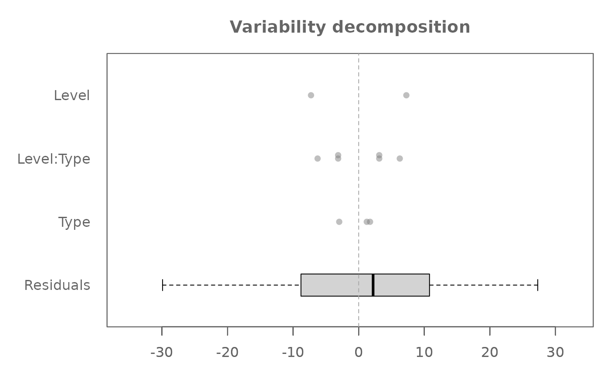
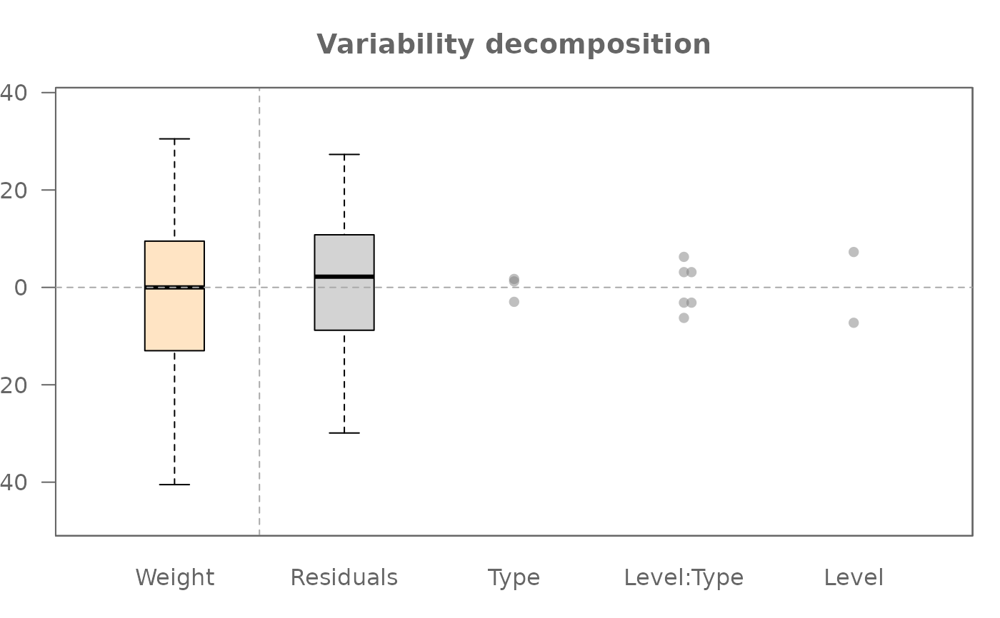
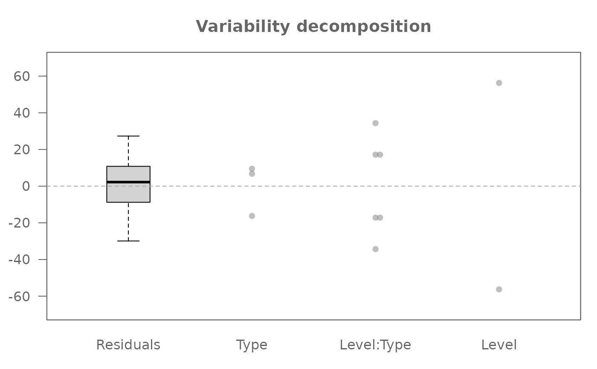

Generates decomposition plots of factor effects and residuals from
an object of class "eda_mean_sweep". These plots aid in visualizing
the additive decomposition of the response variable.
Usage
# S3 method for class 'eda_mean_sweep'
plot(x, plot = "effects", ...)Arguments
- x
An object of class
eda_mean_sweep- plot
A character string specifying the type of plot.
"effects"(default) Plots the raw centered effects.
"ms"Scales effects by
sqrt(N / df)to reflect their relative contribution to variance.
- ...
Additional arguments passed to the internal plotting function
.eda_plot_vardecomp. Common options include:type: Character. String specifying the type of plot to generate. Must be either"boxpnt"(default) or"box"if the effect values are to be displayed as boxplots.rotate: Logical. IfTRUE, rotates the plot orientation.show.resp: Logical. IfTRUE, includes a boxplot of the centered response.outliers: Logical. IfTRUE, displays outliers in boxplots.label: Logical. IfTRUE, adds labels to effect levels.order: Logical. IfTRUE, orders effects by spread.lim: Numeric. Vector of length 2 specifying axis limits.overlap: Character. One of"stack","overplot", or"jitter".pch: Numeric. Controls the plot symbol type.p.col: Character. Controls the color of the plot symbol's outline.p.fill: Character. Controls the fill color of the plot symbol.size: Numeric. Controls the size of the plot symbols.alpha: Numeric (0–1). Controls the transparency of the plot symbols.grey: Numeric (0–1) or character. Controls grayscale coloring.padding,cex.txt,type,input: See.eda_plot_vardecomp.
Details
This plot method leverages the value-splitting and sweeping procedure
performed by eda_mean_sweep() to provide a graphical
representation of the decomposed data. It visualizes the additive overlays:
the residuals and the centered main and interaction effects. This
allows for an exploratory assessment of the relative magnitudes of
different effects and the variability remaining in the residuals.
Such displays are emphasized in EDA to gain insight into data structure.
The actual plotting is handled by the internal utility function
.eda_plot_vardecomp, which
plots the residuals as a boxplot and overlays factor effects as individual
dot plots (by default, type = "boxpnt" is used internally
within .eda_plot_vardecomp).
The order argument (default TRUE) helps in quickly seeing which effects
contribute most to the data's range by sorting their range visually.
References
Hoaglin, D. C., Mosteller, F., & Tukey, J. W. (1991). Fundamentals of Exploratory Analysis of Variance. Wiley.
Examples
# A default plot
M0 <- eda_mean_sweep(feav5_12, Weight, Level, Type, max_order = 2)
plot(M0)

# Adding labels
plot(M0, label = TRUE)

# Options are available for dot plots when tes are present. By default, points
# are stacked. Other options include "jitter",
plot(M0, overlap = "jitter")
# ... or "overplot" (you can modify the point transparency via the "alpha" argument)
plot(M0, overlap = "overplot")
# Plot can be rotated
plot(M0, rotate = TRUE)

# Original response variable can be added as a boxplot
plot(M0, show.resp = TRUE)

# If "mean squares" are to be compared, the effects need to be adjusted
# by setting plot = "ms" (see page 174 of the referenced source)
plot(M0, plot = "ms")
